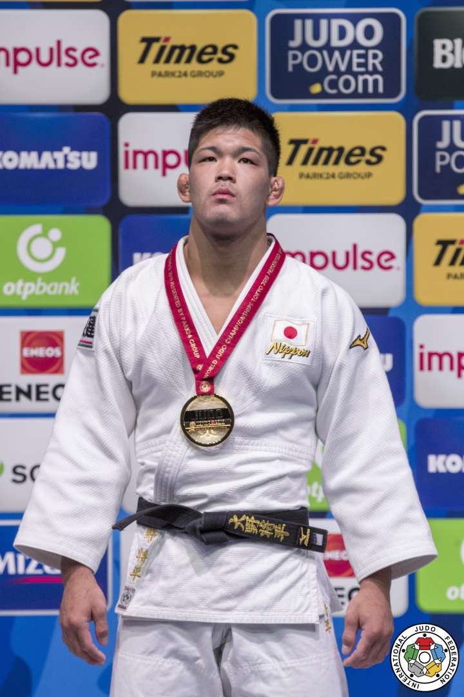
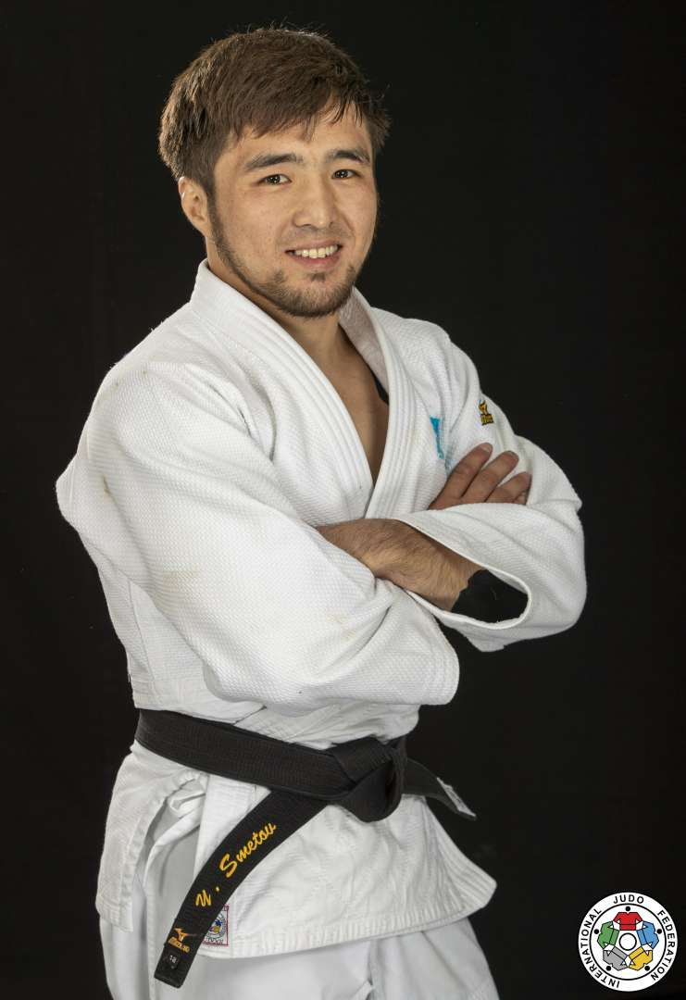

Džudo
Par džudo:
Džudo sākums ir Džigoro Kano 1882. gadā izveidotā džudo skola. Tās dibinātājs kopš bērnības nodarbojies ar džiudžitsu. Sava veida cēlonis jaunas sistēmas meklējumiem bija 19. gadsimta 2. pusē notikušā Meidzi restaurācija, kuras dēļ sākās Japānas politiskā un sabiedriskā modernizācija. Kano uzskatīja, ka džiudžitsa pirmšķirīgais mērķis ir vardarbība, turpretim viņa izveidotā džudo pamatuzdevums ir personības pilnveidošana.
Labākie džudoisti:
1.Shohei Ono (大野将平, Ōno Shōhei, dzimis 1992. gada 3. februārī) ir Japānas džudists. Ono tiek uzskatīts par vienu no labākajiem džudo cīnītājiem, viņam ir trīs pasaules čempionātu un divas olimpiskās zelta medaļas. Viņš ir vieglā svara divīzijas dominējošais cīnītājs, kopš 2015.Gada viņš ir uzvarējis visos galvenajos čempionātos. Specializējoties uchi mata, viņš ir pazīstams ar savu klasisko tehniku un visu ippon stilu. Viņam ir viens no augstākajiem ippon rādītājiem džudo. Ono ir arī viens no visvairāk meklētajiem džudistiem internetā

2.Yeldos Smetov (kazahu: Елдос Бахтыбайұлы Сметов, Eldos Bahtybaiūly Smetov; dzimis 1992. gada 9. septembrī) ir Kazahstānas džudists, kurš startē svara kategorijā līdz 60 kg. Viņš izcīnīja zelta medaļas 2014. gada Āzijas spēlēs un 2015. gada pasaules džudo čempionātos, kā arī sudraba medaļu 2016. gada olimpiskajās spēlēs. Viņš izcīnīja bronzas medaļu 2020. gada olimpiskajās spēlēs Tokijā, Japānā.

3.Daria Hennadiyivna Bilodid (ukraiņu: Дар'я Геннадіївна Білодід; dzimis 2000. gada 10. oktobrī) ir Ukrainas džudists. Viņa ir 2019. gada pasaules un 2019. gada Eiropas zelta medaļas ieguvēja 48 kg kategorijā. 2021. gadā viņa izcīnīja vienu no bronzas medaļām 48kg sieviešu konkurencē 2020.Gada vasaras olimpiskajās spēlēs Tokijā, Japānā.

Par mani